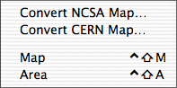

Image maps

The menu contains two functions for
reading server side image map files and inserting the corresponding client
side image map into the document using MAP are AREA elements.
Convert NCSA Map...
Lets you select an
image map file for the NCSA server, converts it to a client side image map
definition, and inserts it at the current position in the document.
Convert CERN Map...
The same function
for image map files for the CERN server.
Previous page
Next page